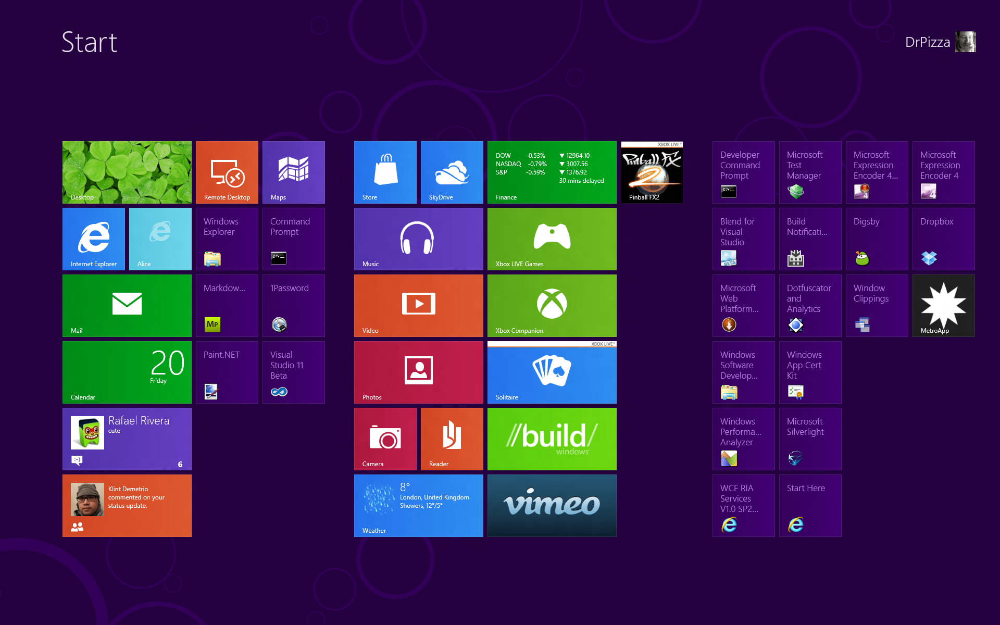
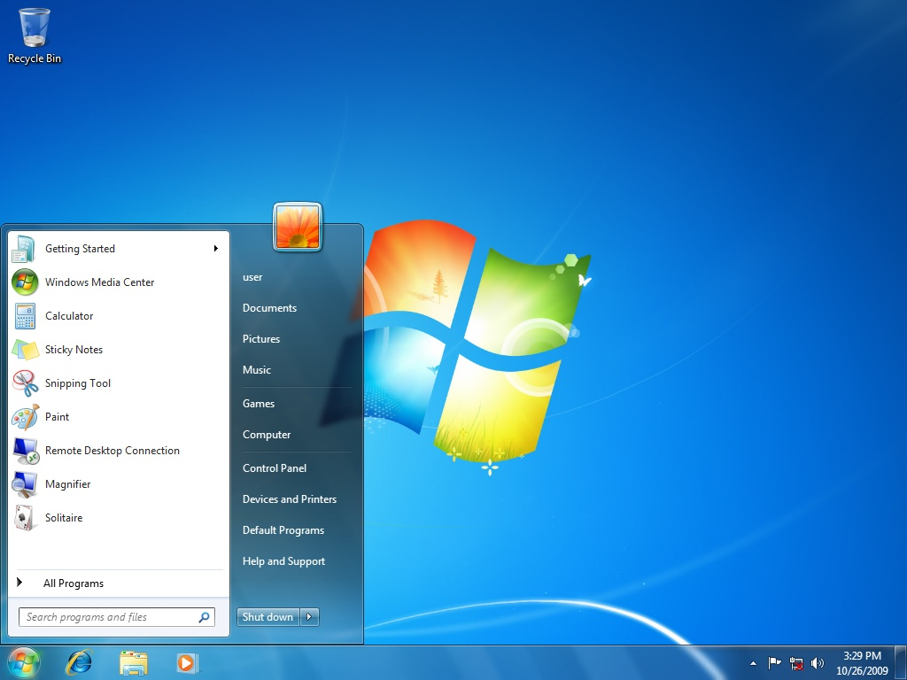
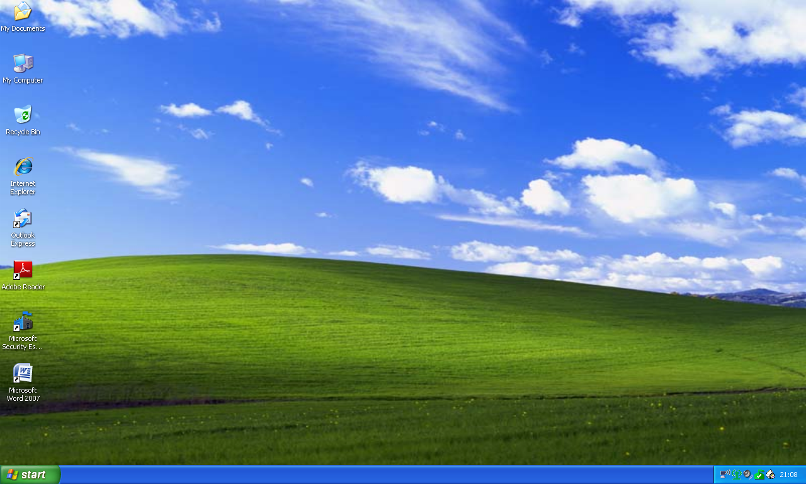

-

Windows 8
Windows 8 est la version du système d'exploitation Windows qui est commercialisée depuis le 26 octobre 20122.
Windows 8 a été dévoilé, avec l'utilisation de l'interface tactile, le 1er juin 20113, mais la version RTM de Windows 8 à destination des constructeurs OEM n'est disponible que depuis le 15 août 2012. Windows 8 a été présenté en grande pompe, à l'instar des anciennes versions (7, Vista ou XP), le 25 octobre 2012, avant la sortie grand public le lendemain pour les différentes plates-formes (tablettes, PC et smartphonesN 1).
La version Windows 8.1 est une mise à jour gratuite de Windows 8 qui est disponible depuis le 17 octobre 2013.
Interface windows
Windows 8 utilise une toute nouvelle interface graphique (longtemps appelée Metro) nommée Modern UI. Cet environnement s'articule sur un tout nouvel écran de démarrage composé de tuiles dynamiques, similaires à celles qui se trouvent sur le système d'exploitation Windows Phone. Chaque tuile représente une application, et peut présenter des informations pratiques sans qu'on entre dans l'application. Par exemple l'application Messages donne le nombre de messages non lus alors que l'application Météo indique la température selon la localisation de l'utilisateur. Ces applications se lancent en plein écran, et sont capables de transmettre des informations entre elles10. Les applications dans la nouvelle interface sont développées avec la nouvelle plate-forme Windows Runtime, en utilisant des langages de programmation variés tels que le C++, Visual Basic, C# et HTML combiné avec du JavaScript.
Le traditionnel environnement de bureau est accessible depuis une tuile. Le bouton de démarrage de la barre des tâches a été déplacé dans la charm bar, accessible en plaquant son curseur / doigt en bas à gauche de son écran. Ceci ouvre l'écran de démarrage, point névralgique de Windows 8, et non plus le menu démarrer traditionnel.
Les applications développées pour ce nouvel environnement étaient précédemment référencées en tant qu'applications de style Metro durant le développement, elles permettent à l'utilisateur de rester dans le même environnement que le bureau principal grâce à un design présent dans tout le système. Cependant, en raison de problèmes éventuels avec la société allemande Metro AG, Microsoft a demandé aux développeurs Windows de ne plus employer ce terme. Un porte-parole de Microsoft a démenti l'information en disant simplement que le terme « Metro » pour décrire le style des applications était un nom de code qui serait progressivement éliminé pour la sortie officielle12. Windows 8 aura des mises à jour annuelles. La première mise à jour en date de Windows 8, dont le nom de code était Windows Blue, s'appelle Windows 8.1.
Ressources nécessaires
Les ressources nécessaires pour installer Windows 8 sont légèrement plus élevées que celles pour Windows 7. Windows 8 requiert un processeur de 1 GHz avec prise en charge de PAE, NX et SSE243. Pour pouvoir exécuter le Store, il faut avoir une résolution de 1024 × 768 pixels ou davantage43. Pour pouvoir « ancrer » les applications sur la droite ou la gauche de l'écran, il faut une résolution d'au moins 1366 × 768 pixels.
Boutique en ligneConfiguration matérielle minimale pour Windows 8 Architecture x86 32bits x86 64bits ARM 32bits Processeur 1GHZ avec prise en charge de PAE, NX et SSE2 ?GHZ ARM v? Mémoire vive 1 Go 2 Go ? Go Carte graphique Direct3D 9, WDDM 1.0 Direct3D 10, WDDM 1.2 Mémoire persistante 16 Go 20 Go 17 Go -

Windows 7
Windows 72 (précédemment connu en tant que Blackcomb et Vienna) est un système d’exploitation de la société Microsoft, sorti le 22 octobre 2009 et successeur de Windows Vista. Windows 7 est progressivement remplacé par Windows 8 à partir du 30 octobre 20123, le support de Windows 7 RTM a pris fin le 9 avril 20133 tandis que la version SP1 a vu son support se terminer en janvier 20153. Cette version de Windows reprend l’acquis de Windows Vista tout en apportant de nombreuses modifications, notamment par divers changements au niveau de l’interface et de l’ergonomie générale, un effort particulier pour la gestion transparente des machines mobiles et le souci d’améliorer les performances globales du système (fluidité, rapidité d’exécution même sur des systèmes moins performants, tels les netbooks) par rapport à son prédécesseur.
En identifiant cette mouture par son numéro de version (il s’agit de la septième version de Windows), Microsoft renoue avec une logique abandonnée depuis Windows 3.11 et Windows NT 4.0. La tradition voulait jusqu’ici que les versions de Windows soient identifiées par référence à l’année de sortie (Windows 95…) ou par une appellation ad hoc (Windows XP ou Windows Vista). Néanmoins, Windows 7 se base sur le noyau NT 6.1.
Le 8 avril 2010, le système d’exploitation dépasse la barre des 10 % de part de marché en 5 mois tandis que Windows Vista avait dû attendre 16 mois pour arriver à un même score.
Boutique en ligneConfiguration matérielle minimale pour Windows 7 Architecture 32 bits 64 bits Processeur Intel(R) Pentium(TM) ou équivalent (intégrant le SSE, SSE2) 1 GHZ minimum Mémoire vive 1 Go de RAM 2 Go de RAM Carte graphique Compatible DirectX 9 Disque dur 16 Go d'espace libre 20 Go d'espace libre Lecteur de disque optique ou clef USB Selon le support utilisé pour l'installation. -

Windows XP
Windows XP est une famille de systèmes d'exploitation multitâches, développée et commercialisée par Microsoft, permettant l'usage d'un ordinateur tel qu'un ordinateur fixe, un portable ou encore un Media Center. Les lettres « XP » proviennent d'experience2.
Windows XP est officiellement le successeur de Windows Me et de Windows 2000. Depuis plusieurs années, Microsoft souhaitait fédérer ses familles de systèmes d'exploitation (grand public et professionnel) en une seule famille, dans le but de réduire les coûts de développement et de maintenance. Windows 2000 devait remplir ce rôle, mais la complexité de son interface d'administration explique son rejet par le grand public. En 1999, le projet Windows Neptune, qui devait fournir la version « familiale » de Windows 2000 est abandonné. Il est remplacé par le projet Whistler, reprenant de nombreuses idées des projets Neptune et Odyssey, qui donne naissance à Windows XP et à ses deux versions : grand public et professionnelle. Les deux versions utilisent le noyau et l'architecture de NT (dite version 5.1). La version grand public est ainsi la même que la version professionnelle, mais elle est allégée de toutes les fonctions estimées inutiles pour un usage domestique.
Windows XP est sorti le 25 octobre 2001 et selon une estimation d'un institut de statistiques américaines, il a été vendu à près de 400 millions de copies en janvier 20063. Il a été successivement remplacé par Windows Vista le 30 janvier 2007 puis par Windows 7 le 22 octobre 2009. La commercialisation de Windows XP fut arrêtée le 30 juin 2008, sauf pour les mini-portables et les grandes entreprises. Le 8 avril 2014, Microsoft cesse de supporter Windows XP ; ce qui signifie, en particulier, l'arrêt de la publication de correctifs de sécurité, mais la version Embedded (SP3) sera encore supportée jusqu'au 12 janvier 2016.
L'édition la plus courante de Windows XP est la version Familiale qui est conçue pour les utilisateurs domestiques tandis que la version Professionnelle, qui comprend entre autres des fonctionnalités réseau et d'administration supplémentaires, est destinée aux entreprises utilisant des réseaux et des serveurs. Il est à noter que cette dernière coûte plus cher que l'édition Familiale. Windows XP Media Center a des fonctionnalités multimédia complémentaires pour permettre par exemple de voir et d'enregistrer la télévision, regarder plus confortablement des DVD. Windows XP pour Tablet PC est une version spécialement conçue pour les Tablet PC. Deux versions distinctes de Windows XP en 64 bits sont sorties, une pour les processeurs Itanium et une pour les processeurs x86-64.
Le support de Windows XP a pris fin le 8 avril 2014, Microsoft n'offrant dès lors plus aucune nouvelle mise à jour du système d'exploitation, ni aucun correctif de sécurité pour cette version de Windows
Boutique en ligneConfiguration matérielle minimale pour Windows XP Processeur Mémoire vive Carte graphique Espace disque
{kind=link}
{kind=link}
{kind=link}